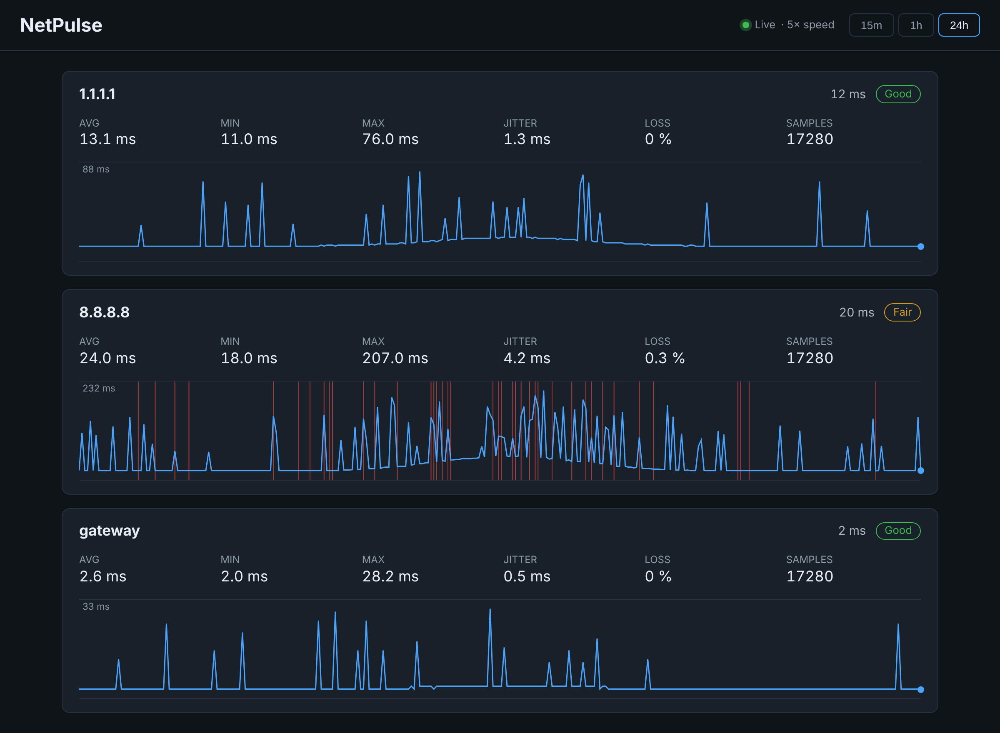

Three vantage points
Pings the default gateway (auto-detected), 1.1.1.1 and 8.8.8.8. If only the public hosts suffer, the problem is past your router.
Open source · Self-hosted · .NET 10
NetPulse continuously pings your router and the Internet, stores every result and shows latency, jitter and packet loss on a live dashboard. So when a call drops, you can tell whether the culprit is your Wi-Fi, your router or your ISP.

The dashboard, with simulated data. The demo runs in your browser; the real app measures the machine it runs on.
Pings the default gateway (auto-detected), 1.1.1.1 and 8.8.8.8. If only the public hosts suffer, the problem is past your router.
Average, min, max, jitter and packet loss per target, plus a Good / Fair / Poor rating tuned for gaming and video calls.
The chart keeps the maximum of each bucket, so a 200 ms spike is never averaged away. Red lines mark every lost packet.
Local SQLite storage with automatic retention. No cloud, no account, no tracking.
/api/samples and /api/stats return JSON for scripts, alerts and
home-automation integrations.
Windows, Linux, macOS and Docker. A small always-on PC or a Raspberry Pi is ideal.
A background service sends an ICMP ping to every target every 5 seconds.
Each sample goes into SQLite with a UTC timestamp; old rows are pruned after 30 days.
Pure domain code computes stats and downsamples long series for the chart.
A Blazor Server dashboard refreshes live, with a dependency-free SVG chart.
ASP.NET Core host
Domain, zero dependencies
NUnit 4
git clone https://github.com/Fpippi/NetPulse.git
cd NetPulse
dotnet run --project src/NetPulse.WebThen open http://localhost:5080.
docker build -t netpulse .
docker run -d --name netpulse \
-p 8080:8080 -v netpulse-data:/data netpulseOn Linux, add --network host so the container sees your real router.